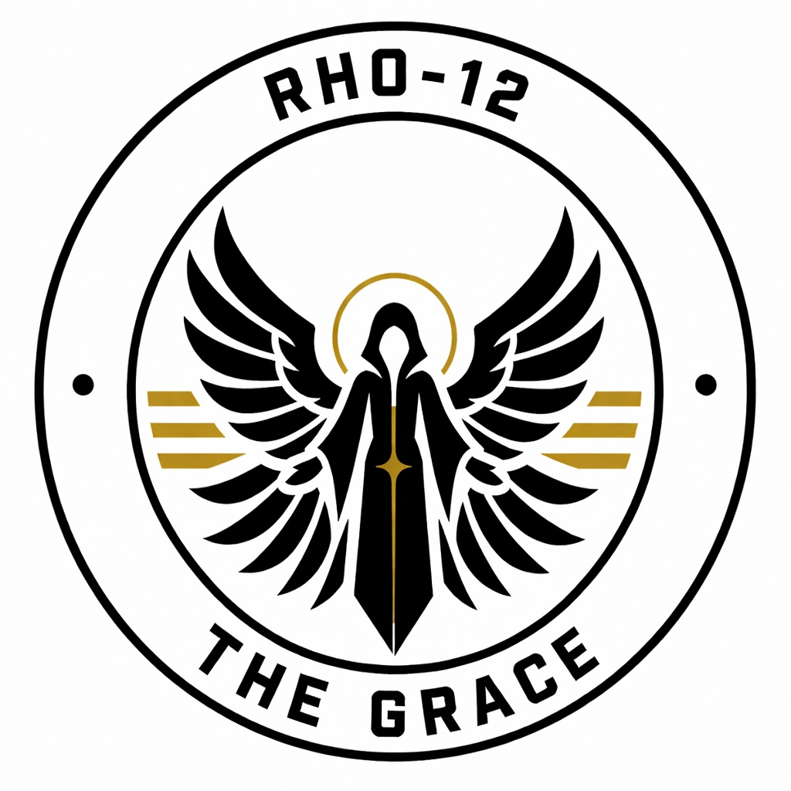

Faction Overview
Origins, ideology, command structure, and the evolution of Rho-12.
OPEN RECORD ↗
RHO-12THE GRACEINTERNAL DOSSIER // RHO-12
Order through preparation. Independence through industry. Success through precision.
The public-facing archive of Rho-12, documenting faction history, equipment development, and strategic operations.
STRATEGIC RECORDS DIVISION
RHO-12 operational archive. Records and designations are maintained for faction use.
01 / ORGANIZATION
A centralized archive for the structure, history, and stated objectives of The Grace.
Origins, ideology, command structure, and the evolution of Rho-12.
OPEN RECORD ↗Roleplay standards, mission objectives, and after-action procedures.
OPEN RECORD ↗02 / FIELD RECORDS
Strategic resource expansion and industrial independence programme.
03 / TECHNICAL RECORDS
Equipment dossiers for use in SCP:RP storytelling and events.
Intercom Suppression System
An Intercom Malware made to disrupt all Public Address System's within the Facility for around 10 minutes.
in-universe TECHNOLOGYTimed Demolition Device
A Custom Made Explosive Device made by Rho-12 Engineer's specifically made to target large infrastructure's such as Facility Generators.
ROLEPLAY EQUIPMENT05 / DOCUMENT INDEX
No records match that search. Try another term or category.